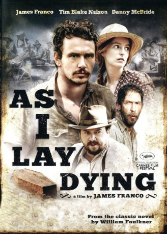

#8006 As I Lay Dying
 
 IMDB-Wertung: 5.4 / 10
IMDB-Wertung: 5.4 / 10  Tomatometer: 40
Tomatometer: 40  Metascore: 0
Metascore: 0 
Anse Bundren (Tim Blake Nelson) lebt mit seiner Frau Addie (Beth Grant) und den Kindern Cash (Jim Parrack), Darl (James Franco), Jewel (Logan Marshall-Green), Dewey Dell (Ahna O’Reilly) und Vardaman (Brady Permenter) auf einer kleinen Farm in Mississippi in der ersten Hälfte des 20. Jahrhunderts und führen ein karges gottesfürchtiges Leben. Cash arbeitet als Zimmermann, seine aktuelle Beschäftigung das Verfertigen eines Sarges. Dieser ist für Addie bestimmt, denn sie ist sterbenskrank. Ihr Wunsch ist es, in der Nachbargemeinde begraben zu werden. Als sie kurze Zeit später verstirbt, begibt sich die Familie auf eine beschwerliche Reise, um Addie die letzte Ehre zu erweisen.
Jahr: 2013
Dauer: 110 Minuten
FSK: 16
Land: USA Studio: Millennium EntertainmentTonspuren: DTS - ,
Untertitel:
Auflösung: 1080p (1920x800) Größe: 7157 MB
Genre: Drama
Regisseur:  James Franco
James Franco
Drehbuch: William Faulkner
Soundtrack: Tim O'Keefe
Darsteller:
 James Franco als Darl Bundren
James Franco als Darl Bundren Tim Blake Nelson als Anse
Tim Blake Nelson als Anse Jim Parrack als Cash
Jim Parrack als Cash Ahna O'Reilly als Dewey Dell
Ahna O'Reilly als Dewey Dell Logan Marshall-Green als Jewel
Logan Marshall-Green als Jewel- Brady Permenter als Vardaman Bundren
 Danny McBride als Vernon Tull
Danny McBride als Vernon Tull Beth Grant als Addie Bundren
Beth Grant als Addie Bundren Brian Lally als Dr. Peabody
Brian Lally als Dr. Peabody- Jennifer Kristen Howell als Cora Tull
- Ken Hudson als Quick
- Jessica Lemon Wilkinson als Mrs. Armstid
- Ash Taylor als Armstid
- Kenny Cook als Grummet
- Coby Batty als Gillespie
- Marcus Vowell als White Man on the Road
 Scott Haze als Skeet McGowan
Scott Haze als Skeet McGowan Jesse Heiman als Jody
Jesse Heiman als Jody- Vince Jolivette als Young Whitfield
- Natalie Minton als Kate Tull
- Anna Kooris als Eula Tull
- Steve Nabors als Reverend Whitfield
- John Still als Samson
- Susan McMillin als Mrs. Samson
- Jim Ritchie als Uncle Billy
- John Maxwell als Moseley
- Billy Ray Reynolds als The Motsson Marshal
- Dunlap Peeples IV als Mac Gillespie
- Kevin Sweeney als McCallum
- Kevin Broughton als Law Man #1
- Greg Thomas als Pastor
- Casey Dillard als Young Addie
- Cameron Spann als Lafe
- Emma Wynters als Mrs. Bundren
- J. Dale Hale als Man on Side of the Road
- Robert Danton Bell als Lawman #2
- O'Mari Johnson als Farmhand #1
- Philip Allen als Farmhand #2
- Harrison Dickens als Farmhand #3
Datei: X:\2013(A-F)\As I Lay Dying (2013, FSK16, 1920x800).mkv seit 10.01.2018
Festplatte: HD 2012(N-Z)-2013(A-H)
 Es gibt insgesamt 127 Filme in der Gruppe '2013(A-F)'
Es gibt insgesamt 127 Filme in der Gruppe '2013(A-F)'